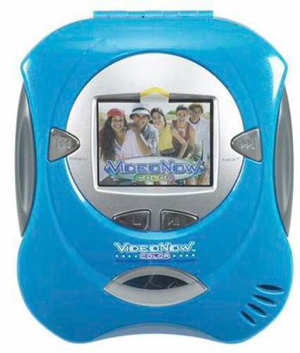
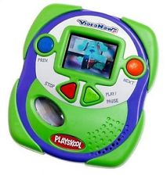
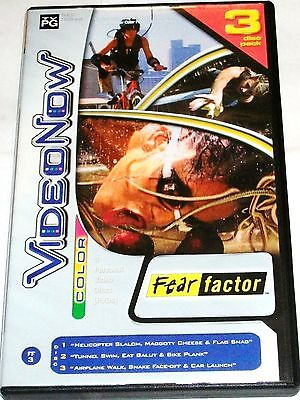
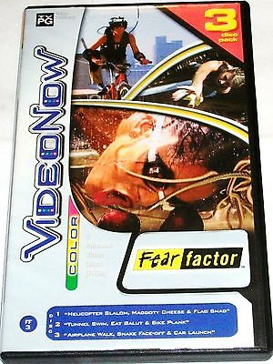
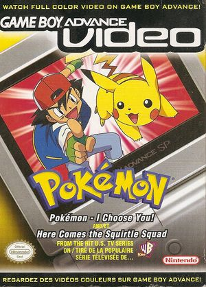

Video Now
What is it?
A cheap, disc-based portable video player from the early 2000's.
Made by Tiger Electronics under Hasbro.
Personal Video Discs
Used its own special disc format (108mm)

Discs each held 30 min. worth of video
Playback Specs
- Framerate of 15fps... despite the already tiny resolution
- Mono sound (because video data was on the left audio channel)
- Little to no skip protection
The Original
- Played in monochrome
- Despite being released in 2003
- Color version was released a year later
- So why was this even a thing?
Color Version
(The one most kids actually got)
VideoNow Jr.
Color version released by Playskool, marketed to younger kids
Discs are slightly more flexible than the regular PVD discs
VideoNow XP
An attempt to capitalize on the GameBoy Advance SP
Had game playing capability, but never saw any game releases, except for a few quiz games and Dragon's Lair-esque QTE shovelware
VideoNow FX

Basically just a transparent version of the VideoNow Color
VideoNow Color HD

A future version of VideoNow that Wikipedia claims was released next year...
No images can be found, not even a bad photoshop
Probably fake, but would be kinda funny if true
VCamNow

A digital camcorder that could record video that could be played on VideoNow Color
Came with custom video editing software and blank PVD discs to burn to
ChatNow
A walkie-talkie made to look like a flip phone
Apparently sends texts and takes monochrome pictures
Seems to be a mere cash-in on the brand name
Typical content
Nickelodeon cartoons were by far the most common
 

There were also few live action shows like America's Funniest Home Videos and Fear Factor
Comparible Media Formats
The VideoNow Color competed with GameBoy Advance Video format, by 4Kids/Majesco/Nintendo(for the Pokemon anime)
Comparison to GBA Video (VN vs. GBAV)
- Resolution: 320x240(VN) / 240x160(GBAV)
- Video Length: 30min(VN) / 90min(GBAV)
- Compression: Bad(VN) / Horrible(GBAV)